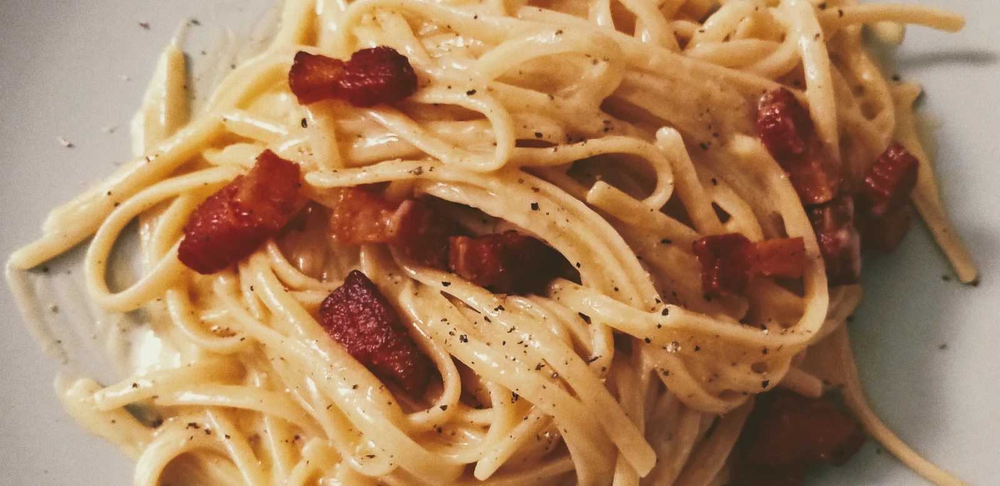

Back to index
Carbonara

Carbonara is a simple dish. The quality of your ingredients make or break it. I recommend using the best ingredients you can source.
Suggestions: bronze extruded pasta, 24 months aged Parmigiano-Reggiano, 12+ months aged Pecorino Romano, guanciale from the butcher, and organic eggs. This recipe assumes medium eggs.
- Spaghetti: 320 g | 11 oz
- Eggs: 5
- Guanciale or Smoked Pancetta (cleaned and cubed): 150 g | 5 oz
- Pecorino Romano or Parmigiano-Reggiano (grated)(optional)
- Crack the eggs in a bowl but only add the yolks. Add a generous amount of your preferred grated cheese (Pecorino or Parmigiano) around 35g (you can optionally add a dash of black pepper).
- Fill a pot with water, and when it boils cook the pasta 1 minute less than advised. Use less salt than you would normally too.
- Fry the preferred pork (Guanciale or Smoked Pancetta) in a iron or nonstick pan (if using a different kind of pan add a dash of extra virgin olive oil) on low to medium heat until the sides are crisp but the insides are chewy.
- While everything is being cooked and fried, beat the eggs manually using a fork until everything is entirely liquid. Remember to watch the time.
- When your pasta is done (-1 minute), drain it and put it in the bowl with eggs. At this step you may consider the timing: if the pasta is too hot you will cook the eggs, and some people don’t like it this way, so just wait for a minute. Keep moving and stirring to fully incorporate the eggs. Add guanciale and as many fats remaining in the pan as you want. Keep moving and stirring.
- Plate and optionally garnish with the preferred grated cheese and black pepper. Voila.